다이아몬드의 원석
기타드랍 몬스터 58종
이 아이템을 주는 몬스터 58종
확인 필요·미출시 표시가 있는 몬스터는 메이플랜드에서 이 아이템을 안 줄 수도 있어요.
시니컬한 주황버섯Lv.8 · 회피 0꿈꾸는 오솔길
주황버섯Lv.8 · 회피 1환승구역
 다크 드레이크Lv.68 · 회피 27차가운 요람
불독Lv.72 · 회피 30시련의 동굴2
스켈레톤 지휘관Lv.73 · 회피 32유적의 낭떠러지
야바 두Lv.75 · 회피 25판타지 테마파크 2
다크 클라크Lv.76 · 회피 27잊혀진 시간의 길<2>
다크 드레이크Lv.68 · 회피 27차가운 요람
불독Lv.72 · 회피 30시련의 동굴2
스켈레톤 지휘관Lv.73 · 회피 32유적의 낭떠러지
야바 두Lv.75 · 회피 25판타지 테마파크 2
다크 클라크Lv.76 · 회피 27잊혀진 시간의 길<2>
 망각의 사제Lv.121 · 회피 41망각의 길1
망각의 사제Lv.121 · 회피 41망각의 길1
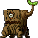
고스텀프Lv.19 · 회피 10깊은골짜기2 길거리 슬라임Lv.19 · 회피 15정글 공터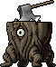
다크 엑스텀프Lv.22 · 회피 7동쪽바위산5 핀붐Lv.22 · 회피 7뾰족한 사각지대 귀마개 프릴드Lv.24 · 회피 9작열하는 사막 모래 두더지Lv.24 · 회피 10모래바람 부는 언덕 이블아이 깊은개미굴1Lv.27 · 회피 10이블아이의굴2 마이티 메이플 이터Lv.30 · 회피 10크라키안 정글 분지확인 필요 북치는 토끼Lv.30 · 회피 12바람테라스1 리티Lv.32 · 회피 13눈 덮인 언덕 파이어보어 동쪽바위산6Lv.32 · 회피 10위험한골짜기2 주니어 라이오너Lv.33 · 회피 15노란빛의정원1 티키Lv.34 · 회피 14시간의갈림길 바나드 그레이Lv.40 · 회피 18바나드의 초원 일렉트로펀트Lv.41 · 회피 28얼음의 방 플라이아이 폐광1Lv.41 · 회피 28폐광4 플래툰 크로노스Lv.41 · 회피 22잃어버린시간<1> 아이언 뮤테Lv.42 · 회피 12연구소 B-3 구역 제타 그레이Lv.42 · 회피 20쿨란초원3 프리져Lv.42 · 회피 20붉은 산호 숲 스켈독Lv.44 · 회피 18유적의 무덤1 레프러콘 (변신)Lv.45 · 회피 20 아이언보어Lv.45 · 회피 20아이언보어의 땅 큰 구름여우Lv.45 · 회피 20적막한 묘지 롬바드 숨겨진 탑Lv.47 · 회피 16숨겨진 탑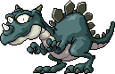
드레이크Lv.50 · 회피 18빛을잃은동굴 크로코Lv.52 · 회피 20위험한크로코1 티포 블루Lv.53 · 회피 18신비한 길 1 머신 MT-09Lv.54 · 회피 20Defeat Monsters 달곰Lv.56 · 회피 18야생곰의 영토1확인 필요 올리 올리Lv.56 · 회피 22진흙 강둑 1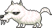
화이트팽Lv.58 · 회피 25차디찬벌판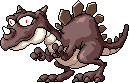
레드 드레이크Lv.60 · 회피 22빛을잃은동굴2 셀키 주니어Lv.60 · 회피 22유령선 5 판다곰Lv.60 · 회피 22야생곰의 영토3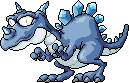
아이스 드레이크Lv.64 · 회피 25드레이크의 영역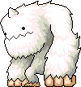
예티Lv.65 · 회피 24얼음골짜기1 예티 (변신)Lv.65 · 회피 24확인 필요 예티 (분리)Lv.65 · 회피 24 호문 연구소 201호Lv.65 · 회피 24연구소 201호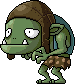
핀호브Lv.76 · 회피 28가파른 언덕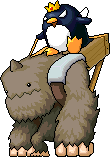
다크 예티와 페페Lv.82 · 회피 30위험한절벽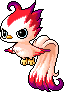
블러드 하프Lv.83 · 회피 27하늘 둥지2 블루 드래곤터틀Lv.90 · 회피 37용의 숲 입구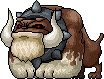
파이어독Lv.90 · 회피 38완완 지옥탕 본피쉬Lv.92 · 회피 38깊은 바다 협곡1 두목Lv.95 · 회피 35쇼와 거리 3 콜드샤크Lv.102 · 회피 38난파선의 무덤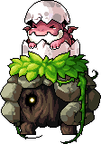
네스트골렘Lv.110 · 회피 38위험한 용의 둥지확인 필요 네스트골렘 (변신)Lv.110 · 회피 38망가진 용의 둥지드랍 정보는 고전 메이플 서버 데이터(Cosmic, AGPL-3.0) 기준 참고용이고 일부는 메이플랜드 자료로 확인했어요. 드랍률은 넣지 않았어요.